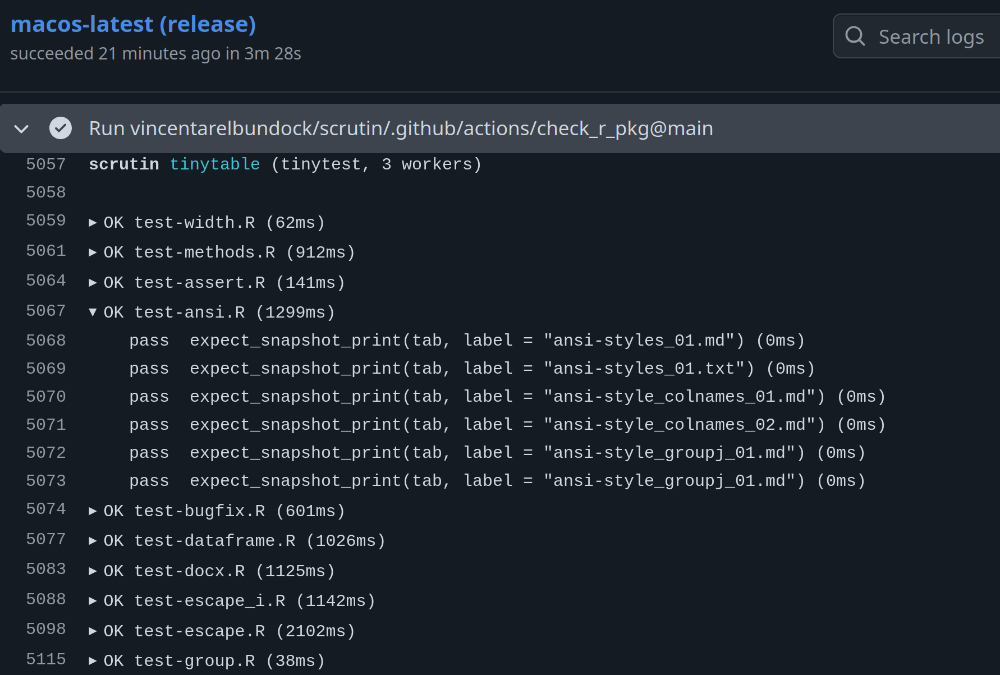

GitHub Actions¶
Purpose-built for GitHub Actions CI runs. Streams ::group:: / ::endgroup:: markers per file so the job log has collapsible sections, emits ::error and ::warning workflow commands so failures and lint warnings appear as inline annotations on the pull request, and writes a Markdown summary (a pass/fail/error table plus the full failure messages) to $GITHUB_STEP_SUMMARY so it renders on the job summary page.

Falls back gracefully on non-GitHub runners: the annotations are just echoed into stdout, and the summary write is skipped when the env var is missing.
Example workflow¶
A minimal workflow that installs Scrutin, sets up R and Python, and runs every detected suite on Linux, macOS, and Windows for each push and pull request:
name: tests
on: [push, pull_request]
jobs:
scrutin:
strategy:
fail-fast: false
matrix:
os: [ubuntu-latest, macos-latest, windows-latest]
runs-on: ${{ matrix.os }}
steps:
- uses: actions/checkout@v4
- uses: r-lib/actions/setup-r@v2 # drop if R-free
- uses: actions/setup-python@v5 # drop if Python-free
with:
python-version: "3.12"
- name: Install scrutin
run: cargo install scrutin
- name: Run tests
run: scrutin -r github
Every GitHub-hosted runner image (ubuntu-latest, macos-latest, windows-latest) ships with a working Rust toolchain pre-installed, so cargo install scrutin works on all three without a separate setup action. Compiling from source on every job is slow, so for larger matrices consider caching Cargo state with Swatinem/rust-cache or installing a prebuilt binary via taiki-e/install-action.
Drop the setup-r step on Python-only projects and the setup-python step on R-only projects. Add a separate scrutin -r junit:report.xml step if you also want a JUnit artifact to upload with actions/upload-artifact.
Bundled composite actions¶
The scrutin repository ships four composite actions under .github/actions/ that you can reuse in your own workflows. Reference them as vincentarelbundock/scrutin/.github/actions/<name>@<ref>. Pin <ref> to a release tag (e.g. v0.0.7) rather than main so updates to scrutin's CI do not silently change your own.
| Action | What it does |
|---|---|
install_scrutin |
Downloads the latest scrutin release binary via the official installer (much faster than cargo install scrutin on every job). Works on Linux, macOS, and Windows runners. |
install_r |
Installs R and your package's dependencies. On Linux it uses r-ci / r2u for binary apt-based package installs (fast cold-start); on macOS and Windows it falls back to r-lib/actions. |
install_python |
Installs uv and a pinned Python version. Optionally runs uv sync in a working directory. |
check_r |
Runs R CMD check with --no-tests --as-cran, then runs the package's tests via scrutin. The split is the point: R CMD check validates docs, examples, vignettes, and CRAN policy without re-running tests (which the check would otherwise run with R's default reporter, producing slow, unstructured output). scrutin then runs the tests separately with the -r github reporter so failures surface as PR annotations. |
Larger example: R package + Python module in one repo¶
The workflow below reuses the bundled actions to check an R package on three operating systems and, in parallel, run the Python test suite on Linux. No hand-rolled Rust toolchain step, no duplicate test execution inside R CMD check, and every failure is surfaced as an inline PR annotation through -r github.
name: tests
on: [push, pull_request]
jobs:
check-r:
name: R CMD check + scrutin (${{ matrix.os }})
strategy:
fail-fast: false
matrix:
os: [ubuntu-latest, macos-latest, windows-latest]
runs-on: ${{ matrix.os }}
steps:
- uses: actions/checkout@v4
- uses: vincentarelbundock/scrutin/.github/actions/check_r@v0.0.7
with:
r-version: release
# `check_r` defaults to `-r github`. Override for a JUnit sidecar:
# reporter: junit:report.xml
test-python:
name: pytest via scrutin
runs-on: ubuntu-latest
steps:
- uses: actions/checkout@v4
- uses: vincentarelbundock/scrutin/.github/actions/install_python@v0.0.7
with:
python-version: "3.12"
sync: "true" # runs `uv sync` so pytest sees the project
- uses: vincentarelbundock/scrutin/.github/actions/install_scrutin@v0.0.7
- name: Run Python tests
run: scrutin -r github --set run.tool=pytest
A few details worth flagging:
check_ris the headline piece. Its defaultcheck-argsinclude--no-tests, soR CMD checkvalidates the package's static properties (docs, examples, vignettes, CRAN policy,NAMESPACE,NEWS.md) and then the action hands off to scrutin for the actual test run. This avoids executing your tests twice (once under R's terse built-in reporter insideR CMD check, and again under scrutin's per-file parallel runner) and keeps the test failures in a machine-consumable format.install_pythonwithsync: "true"runsuv syncin the working directory so your project's dependencies resolve before pytest starts. Setsync: "false"(the default) if you only needuvand a bare interpreter.--set run.tool=pytestrestricts scrutin to the pytest suite in the Python job, so it does not try to run any R tools that happen to be auto-detected in the repo. Drop it for a monoglot project.- Parallel jobs, not one matrix. Splitting R and Python into separate jobs lets them fail independently and shortens the critical path on a PR. Matrix-ing one job across OS × language grows the cell count quickly without adding coverage.